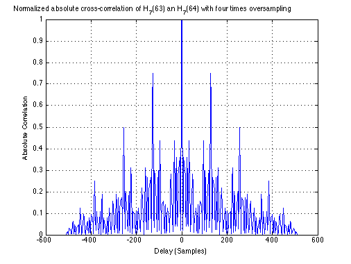

Normalized absolute cross-correlation of H_7(63) an H_7(64) with four
Contents
times oversampling
Copyright 2007 Telecommunications Lab
clength=128; C=hadamard(clength); code1=C(63,:).'; code2=C(64,:).'; % Oversampled code, oversampling factor 4, square chip pulse-shape, i.e., % code chips are repeated 4 times: code1o=kron(code1,[1 1 1 1].'); code2o=kron(code1,[1 1 1 1].');
Plot autocorrelation of code 1, and cross-correlation
%between code 1 and code 2 lag=-(2*length(code1o)-2)/2:(2*length(code1o)-2)/2; plot(lag,(abs(xcorr(code1o,code1o)))/length(code1o),'Linewidth',1.5) xlabel('Delay (Samples)');ylabel('Absolute Correlation') title('Normalized absolute cross-correlation of H_7(63) an H_7(64) with four times oversampling') grid on;